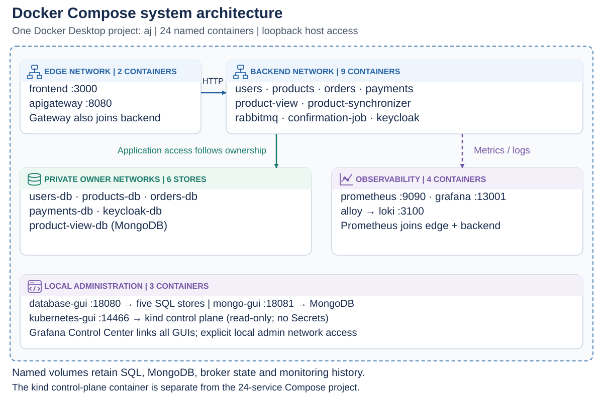
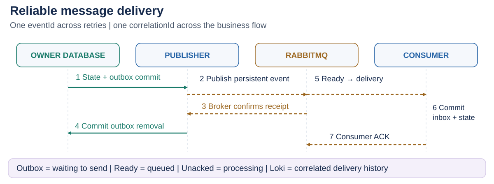
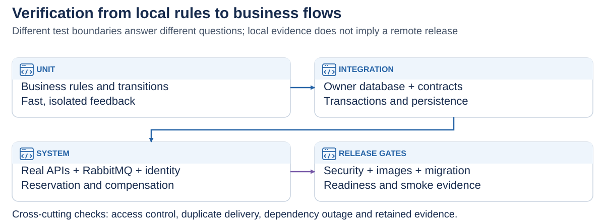
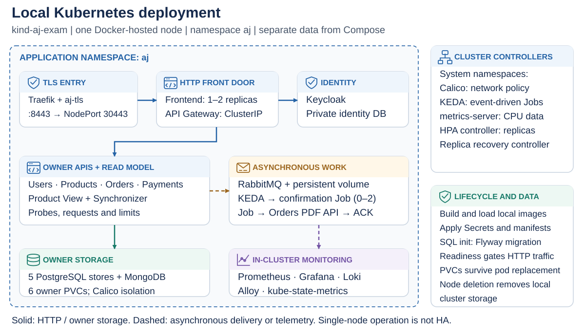
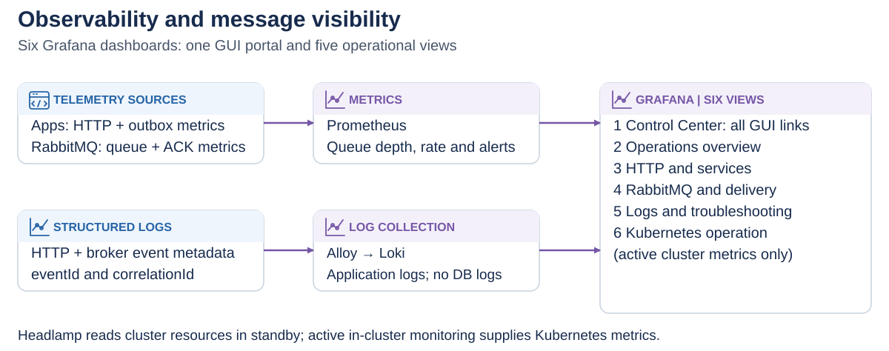

<!doctype html><html lang="en"><meta charset="utf-8"><title>AJ Motors · Mandatory Assignment 2</title><style>@page{size:13.333in 7.5in;margin:0}*{box-sizing:border-box}body{margin:0;background:#e2e8f0;font-family:Arial,sans-serif;color:#172b4d}section{position:relative;width:1280px;height:720px;background:white;margin:24px auto;padding:28px 52px;page-break-after:always;overflow:hidden}header{font-size:14px;letter-spacing:2px;color:#2563a6;font-weight:bold}h1{font-size:38px;margin:34px 0}.body{display:flex;height:470px;align-items:center}.body ul{font-size:29px;line-height:1.5;padding-left:30px;margin:0}.body li{margin:0 0 22px}.with-image ul{width:38%;font-size:22px;padding-right:30px}.with-image img{width:62%;max-height:470px;object-fit:contain}footer{position:absolute;bottom:24px;left:52px;right:52px;font-size:12px;color:#64748b}footer span{float:right}@media print{body{background:white}section{width:13.333in;height:7.5in;margin:0}}</style><section><header>MANDATORY ASSIGNMENT 2</header><h1>AJ Motors</h1><div class="body "><ul><li>Working distributed system · implementation and verification</li><li>Ahmad Alkaseb · Jeppe Koch · Asger Bergøe · Laith Alkaseb</li><li>https://github.com/AhmadAlkaseb/aj</li></ul></div><footer>AJ MOTORS · 12 November 2026 <span>01</span></footer></section><section><header>MANDATORY ASSIGNMENT 2</header><h1>What works locally?</h1><div class="body "><ul><li>Catalogue, customer profiles, exclusive reservation and manual payment.</li><li>Real REST/GraphQL frontend workflow and protected backend ownership.</li><li>Actual local AI drafts; bounded PDF confirmation work.</li><li>Selected failure/recovery scenarios and persistent demonstration data.</li></ul></div><footer>AJ MOTORS · 12 November 2026 <span>02</span></footer></section><section><header>MANDATORY ASSIGNMENT 2</header><h1>Compose development architecture</h1><div class="body with-image"><ul><li>24 named services under aj; persistent owner stores and shared local administration.</li></ul></div><footer>AJ MOTORS · 12 November 2026 <span>03</span></footer></section><section><header>MANDATORY ASSIGNMENT 2</header><h1>Asynchronous cooperation</h1><div class="body with-image"><ul><li>Order → customer validation → inventory reservation → payment outcome.</li><li>Failure/cancellation compensates eligible stock.</li><li>Backend cooperation fixture starts private stores, broker and four owners.</li><li>No UI or gateway is required for the dedicated cooperation scenario.</li></ul></div><footer>AJ MOTORS · 12 November 2026 <span>04</span></footer></section><section><header>MANDATORY ASSIGNMENT 2</header><h1>Delivery and failure visibility</h1><div class="body with-image"><ul><li>Outbox: waiting to send; Ready: waiting in broker; Unacked: processing.</li><li>Publisher confirmation differs from consumer acknowledgement.</li><li>Correlated metadata links requests, events and logs without payload secrets.</li></ul></div><footer>AJ MOTORS · 12 November 2026 <span>05</span></footer></section><section><header>MANDATORY ASSIGNMENT 2</header><h1>Testing and CI gates</h1><div class="body with-image"><ul><li>Unit, API/database/message integration and backend cooperation are separate.</li><li>Change-aware CI skips unrelated work; required failures block dependants.</li><li>47 local Python policy/deployment/federation tests passed at review.</li><li>GitHub-hosted execution remains unverified without account authentication.</li></ul></div><footer>AJ MOTORS · 12 November 2026 <span>06</span></footer></section><section><header>MANDATORY ASSIGNMENT 2</header><h1>Kubernetes deployment</h1><div class="body with-image"><ul><li>Active demo: TLS ingress, owner PVCs, migration gates, HPA and KEDA Jobs.</li><li>Standby: Headlamp reads resources while Compose serves the application.</li><li>Single-node simulation is not host-failure high availability.</li></ul></div><footer>AJ MOTORS · 12 November 2026 <span>07</span></footer></section><section><header>MANDATORY ASSIGNMENT 2</header><h1>Monitoring and GUI portal</h1><div class="body with-image"><ul><li>Grafana Control Center links SQL/Mongo/Kubernetes and all operations tools.</li><li>Six dashboards; metrics + logs + RabbitMQ delivery status.</li><li>Local browser checks passed all database GUIs and read-only Headlamp.</li></ul></div><footer>AJ MOTORS · 12 November 2026 <span>08</span></footer></section><section><header>MANDATORY ASSIGNMENT 2</header><h1>Deployment plan and delivery</h1><div class="body "><ul><li>AKS cloud plan includes identity, AI, stores, broker, jobs and observability.</li><li>Installation and verification instructions are included in the report.</li><li>Remaining external inputs: owned OAuth app, real login and authentic contributions.</li><li>Upload PowerPoint, report and repository link to itsLearning.</li></ul></div><footer>AJ MOTORS · 12 November 2026 <span>09</span></footer></section></html>